Data preparation
miércoles 23 septiembre 2020 2:52:09
Document content: Data preparation
In this site the production and adjustment of the databases that are used for the multilevel analysis are exposed. The work in general focuses on selecting and recoding variables obtained from international databases such as the International Social Survey (ISSP) and the Standardized World Income Income Inequality Database (SWIID). In addition, factor analyzes are performed to subsequently impute predicted values that represent the estimated latent variables.
In the first section, in addition to selecting and recoding ISSP variables, factor analyzes are performed to evaluate and create the latent variables of preferences about redistribution and inequality. In section 2, international SWIID, GOQ and World bank data are collected and added together with ISSP data, which includes predicted values for latent variables of meritocratic perceptions and preferences.
load packages
library(sjPlot)
library(sjmisc) # several functions,ej read_stata
library(descr)
library(memisc) # codebook
library(psych) # cor2latex
library(corrplot) # graph correlations
library(lavaan)
library(stargazer)
library(semTools)
library(plyr) # count
library(dplyr)
#library(car) # recode
library(ggplot2)
#library(Hmisc)
library(tidyverse)
library(data.table)
library(stringr)
library(countrycode)
library(lme4)
library(texreg)
library(mice)
library(ggrepel) # for scatter labels in sjp.scatter
#library(semPlot)
library(haven)
library(sjlabelled)
library(kableExtra)
library(summarytools)
library(tidyselect)
library(magrittr)
library(semPlot)
#library(Hmisc)
library(knitr)Section 1: Preparation individual variables ISSP
1.1 General preparation ISSP
- change variable names to lowercase
- Generate new sequential id individuals by country to merge
load(file = "input/data/original/issp.rda")
#load(url('https://raw.githubusercontent.com/franciscomeneses/bases/master/issp.rda'))
# Check data
#names(issp2009)
#sjPlot::view_df(issp2009)
### change variable names to lowercase
names(issp2009) <- tolower(names(issp2009))
### Check & generate IDs (v4: respondent, v5: country)
### Generate new sequential id individuals by country to merge
issp2009$id <- sequence(tabulate(issp2009$v5))
issp2009$idtem=issp2009$v5*10000
issp2009$id=issp2009$idtem + issp2009$id1.2 Preparation-data of the redistributive preference scales: redistrib.rda
| Code | New Code | Variable |
|---|---|---|
| v33 | income_dif | Gov. resp to reduce differences in income |
| v34 | unemployed | Gov. resp to provide decent s andard of living for unemployed |
| v36 | taxes | People with high income should pay a larger / same smaller sha3re of income in taxes than those with low income |
| v38 | health | ok if people with high income can buy better health |
| v39 | educ | ok if people with high income can buy better education |
1.2.1 Preparation
- Rename & define object
# select
redistrib=issp2009[,c("v5","v33","v34","v36","v38","v39","id")]
# new names(issp2009)
redistrib$income_dif = redistrib$v33
redistrib$unemployed = redistrib$v34
redistrib$taxes = redistrib$v36
redistrib$health = redistrib$v38
redistrib$educ = redistrib$v39
#Delete old variables
redistrib = redistrib[-c(2:6)]
stargazer(redistrib[-c(1,2)], type="html") | Statistic | N | Mean | St. Dev. | Min | Pctl(25) | Pctl(75) | Max |
| income_dif | 56,021 | 2.302 | 1.483 | 1 | 1 | 3 | 9 |
| unemployed | 56,021 | 2.234 | 1.354 | 1 | 1 | 3 | 9 |
| taxes | 56,021 | 2.290 | 1.546 | 1 | 1 | 3 | 9 |
| health | 56,021 | 3.684 | 1.528 | 1 | 3 | 5 | 9 |
| educ | 56,021 | 3.650 | 1.545 | 1 | 2 | 5 | 9 |
- Recode NAs
redistrib[3:7][redistrib[3:7] > 5] <- NA
stargazer(redistrib[-c(1,2)], type="html") | Statistic | N | Mean | St. Dev. | Min | Pctl(25) | Pctl(75) | Max |
| income_dif | 54,400 | 2.125 | 1.089 | 1.000 | 1.000 | 3.000 | 5.000 |
| unemployed | 54,698 | 2.088 | 0.987 | 1.000 | 1.000 | 3.000 | 5.000 |
| taxes | 53,258 | 1.984 | 0.779 | 1.000 | 1.000 | 2.000 | 5.000 |
| health | 54,237 | 3.536 | 1.312 | 1.000 | 2.000 | 5.000 | 5.000 |
| educ | 54,220 | 3.498 | 1.321 | 1.000 | 2.000 | 5.000 | 5.000 |
dim(redistrib)## [1] 56021 7- adjust labels NAs
get_labels(redistrib$income_dif)
redistrib[,3:7] <-sjlabelled::set_na(redistrib[,c("income_dif","unemployed", "taxes", "health", "educ")], na = c(8,9)) ## [1] "Strongly agree" "Agree"
## [3] "Neither agree nor disagree" "Disagree"
## [5] "Strongly disagree" "Cant choose"
## [7] "NA"- Reverse code for SEM models
redistrib[3:7]=6-redistrib[3:7]1.2.2 Factor scores
cfa_red1 <- '
# latent variables
redist =~ income_dif + unemployed + taxes
accum =~ health + educ
'redistrib_sco [56021,9]
print(dfSummary(redistrib_sco, valid.col = FALSE, graph.magnif = 1),
max.tbl.height = 300, method = "render")Data Frame Summary
Dimensions: 56021 x 9Duplicates: 0
| No | Variable | Label | Stats / Values | Freqs (% of Valid) | Graph | Missing | ||||||||||||||||||||||||||||||
|---|---|---|---|---|---|---|---|---|---|---|---|---|---|---|---|---|---|---|---|---|---|---|---|---|---|---|---|---|---|---|---|---|---|---|---|---|
| 1 | v5 [numeric] | Country (see V4 for codes for the sample) | Mean (sd) : 432.7 (263.8) min < med < max: 32 < 392 < 862 IQR (CV) : 509 (0.6) | 41 distinct values |  |
0 (0%) | ||||||||||||||||||||||||||||||
| 2 | id [numeric] | Country (see V4 for codes for the sample) | Mean (sd) : 4328175.1 (2637921.7) min < med < max: 320001 < 3920423 < 8620969 IQR (CV) : 5090563 (0.6) | 56021 distinct values |  |
0 (0%) | ||||||||||||||||||||||||||||||
| 3 | income_dif [numeric] | Q6b It is responsib of governm to reduce differences in income betwn people with | Mean (sd) : 3.9 (1.1) min < med < max: 1 < 4 < 5 IQR (CV) : 2 (0.3) |
|
 |
1621 (2.89%) | ||||||||||||||||||||||||||||||
| 4 | unemployed [numeric] | Q6c The government should provide a decent standard of living for the unemployed | Mean (sd) : 3.9 (1) min < med < max: 1 < 4 < 5 IQR (CV) : 2 (0.3) |
|
 |
1323 (2.36%) | ||||||||||||||||||||||||||||||
| 5 | taxes [numeric] | Q7a Tax: Do you think people with high incomes should pay larger share of their | Mean (sd) : 4 (0.8) min < med < max: 1 < 4 < 5 IQR (CV) : 1 (0.2) |
|
 |
2763 (4.93%) | ||||||||||||||||||||||||||||||
| 6 | health [numeric] | Q8a Just or unjust - that people with higher incomes can buy better health care? | Mean (sd) : 2.5 (1.3) min < med < max: 1 < 2 < 5 IQR (CV) : 3 (0.5) |
|
 |
1784 (3.18%) | ||||||||||||||||||||||||||||||
| 7 | educ [numeric] | Q8b Just or unjust - that people with higher incomes can buy better education fo | Mean (sd) : 2.5 (1.3) min < med < max: 1 < 2 < 5 IQR (CV) : 3 (0.5) |
|
 |
1801 (3.21%) | ||||||||||||||||||||||||||||||
| 8 | redist [numeric] | Mean (sd) : 0 (0.6) min < med < max: -2.5 < 0.1 < 1 IQR (CV) : 0.9 (13817193558075732) | 7274 distinct values |  |
0 (0%) | |||||||||||||||||||||||||||||||
| 9 | accum [numeric] | Mean (sd) : 0 (1.1) min < med < max: -1.4 < -0.3 < 2.4 IQR (CV) : 1.8 (-54750364528024224) | 7274 distinct values |  |
0 (0%) |
Generated by summarytools 0.9.6 (R version 4.0.0)
2020-08-21
1.3 Prepare individual level variables.
### Select
indepvar= issp2009 %>% dplyr::select(contains("_inc"), "sex","age","degree", "hompop", "v44", "v45", "movstatus"="v46", "v5","id")
### Recode sex
sex_plotbefore <- sjPlot::plot_frq(indepvar$sex, title ="Gender before")
indepvar$sex=ifelse(indepvar$sex==1,0,ifelse(indepvar$sex==2,1,NA))
sex_plotafter <- sjPlot::plot_frq(indepvar$sex, title ="Gender after")
cowplot::plot_grid(sex_plotbefore, sex_plotafter, ncol=2)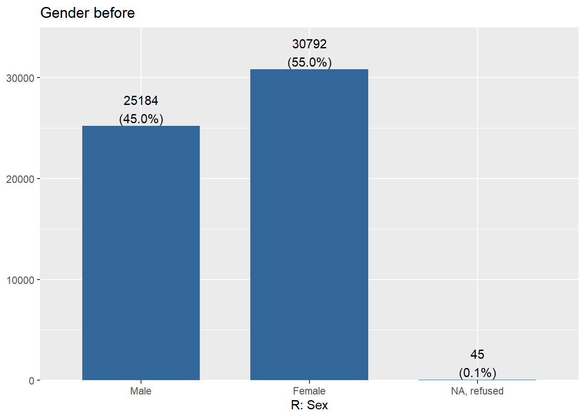
### Recode Age
# Age
agebefore<-sjPlot::plot_frq(indepvar$age, title = "Age before",show.mean = T , show.values = F,show.n = F, axis.labels = NULL, type = c("histogram"))
#which(indepvar$age > 85) # / 461 casos !
#which(indepvar$age < 15) # / 0 casos !
indepvar$age[indepvar$age > 85] = NA
# Categorical age
indepvar$age_c=indepvar$age
indepvar$age_c[indepvar$age_c <= 25] = 1
indepvar$age_c[indepvar$age_c > 25 & indepvar$age_c <=35] = 2
indepvar$age_c[indepvar$age_c > 35 & indepvar$age_c <=45] = 3
indepvar$age_c[indepvar$age_c > 45 & indepvar$age_c <=55] = 4
indepvar$age_c[indepvar$age_c > 55 & indepvar$age_c <=65] = 5
indepvar$age_c[indepvar$age_c > 65] = 6
ageafter <- sjPlot::plot_frq(indepvar$age_c, title = "Age after", show.na = T, axis.labels = c("18-25","25 -35", "35-45", "45-55", "55,65", "65-85","NA(>85)"))
cowplot::plot_grid(agebefore, ageafter, ncol=2)### Recode Education
degrebefore <-sjPlot::plot_frq(indepvar$degree, coord.flip = TRUE, title = "Degree before")
# Recode. Values over 5 are removed
indepvar$degree[indepvar$degree > 5]=NA
#### Dummy university
# Dummy university
indepvar$univ=indepvar$degree
indepvar$univ=ifelse(indepvar$univ<=4,0,
ifelse(indepvar$univ==5,1,NA))
degreafter<- sjPlot::plot_frq(indepvar$univ, coord.flip = TRUE, title = "Dummy university")
cowplot::plot_grid(degrebefore, degreafter, ncol=2)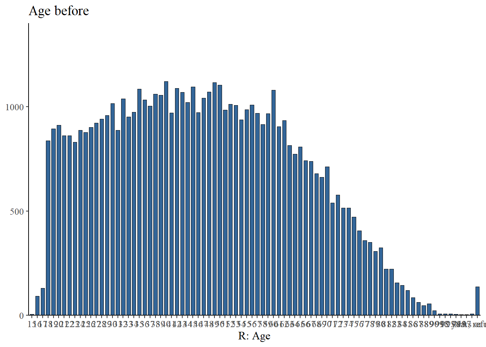
### Recode Income
#stargazer(indepvar[1:41], type="html")
# Income (variables finish in _inc)
# Continuo
# Recode missings
# Para todos los paises, recode missings.
indepvar[1:41][indepvar[1:41] >= 9999990] <- NA
indepvar[1:41][indepvar[1:41] == 999990] =NA
indepvar[1:41][indepvar[1:41] == 999997] =NA
indepvar[1:41][indepvar[1:41] == 999998] =NA
indepvar[1:41][indepvar[1:41] == 999999] =NA
# Identificar ceros (para poder diferenciar de los NAs luego)
indepvar[1:41][indepvar[1:41] == 0] <- 111111
# Agregar ahora todos en un solo vector
indepvar$income=rowSums(indepvar[1:41],na.rm = TRUE)
indepvar$income[indepvar$income ==0]=NA
indepvar$income[indepvar$income ==1111]=0
#stargazer(indepvar[1:41], type="html")
#summary(indepvar$income)
### Recode Household income
# Household income
# Preparar numero de personas en household
indepvar$hompop[indepvar$hompop==99]=NA
# Ahora dividir el vector income por n° de personas en hogar
indepvar$hhincome=indepvar$income/indepvar$hompop
summary(indepvar$hhincome)Min. 1st Qu. Median Mean 3rd Qu. Max. NA’s 0 750 2800 Inf 22222 Inf 10129
# Y ajustar NAs de la variable final ingreso continuo
indepvar$hhincome[indepvar$hhincome==0]= NA
indepvar$hhincome[indepvar$income==111111]= 0
indepvar$hhincome[indepvar$hompop==0]= NA
#Wsummary(indepvar$hhincome)
# check
income=indepvar[c("v5", "ar_inc", "hompop","income",
"hhincome")]
# View(income)
# Generar quintiles de ingreso
indepvar %>% group_by(v5) %>% mutate(quintile =
ntile(hhincome,5)) ->indepvar
# Check
#prop.table(table(indepvar$v5,indepvar$quintile),1)*100
# Generar quintiles con NA como categoria
indepvar$quintile_miss=indepvar$quintile
indepvar$quintile_miss[is.na(indepvar$quintile_miss)] = 6
sjPlot::plot_frq(indepvar$quintile_miss, coord.flip = TRUE, title = "Quintiles de ingreso" , axis.labels=c("quintile 1","quintile 2","quintile 3","quintile 4","quintile 5","Miss"))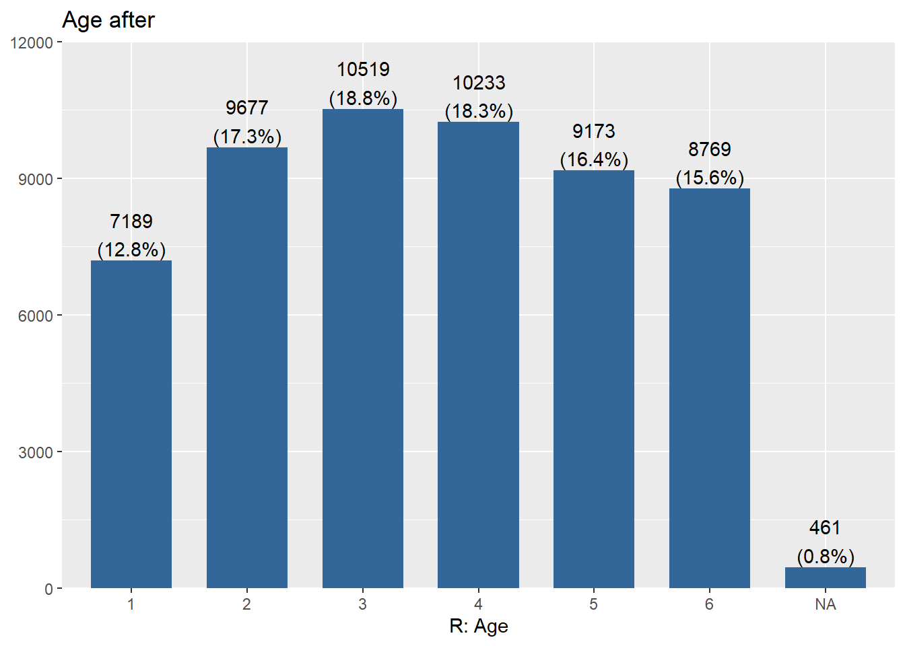
#stargazer(indepvar$quintile_miss, type = "html")
### Recode Subjetive status
# Subjective status
# Individual
#freq(indepvar$v44)
indepvar$sstatus=indepvar$v44
indepvar$sstatus[indepvar$ssttus>10]=NA
#freq(indepvar$sstatus)
# Family
#freq(indepvar$v45)
indepvar$f_sstatus=indepvar$v45
indepvar$f_sstatus[indepvar$f_sstatus>10]=NA
#freq(indepvar$f_sstatus)
movestatusbefore <- sjPlot::plot_frq(indepvar$movstatus, coord.flip = TRUE, title = "Subjective status mobility before")
indepvar$movstatus[indepvar$movstatus>=8]= NA
indepvar$movstatus <- car::recode(indepvar$movstatus,recodes ="c(1,2)=2;3=1;c(4,5)=3;c(6,7)=4")
indepvar$movstatus <- set_labels(indepvar$movstatus,labels = c("Sin movilidad"=1,
"Mov. Ascendente"=2,
"Mov. Descendente"=3,
"Indeterminado"=4))
movestatusafter <- sjPlot::plot_frq(indepvar$movstatus, coord.flip = TRUE, title = "subjective status mobility after")
cowplot::plot_grid(movestatusbefore, movestatusafter, ncol=2)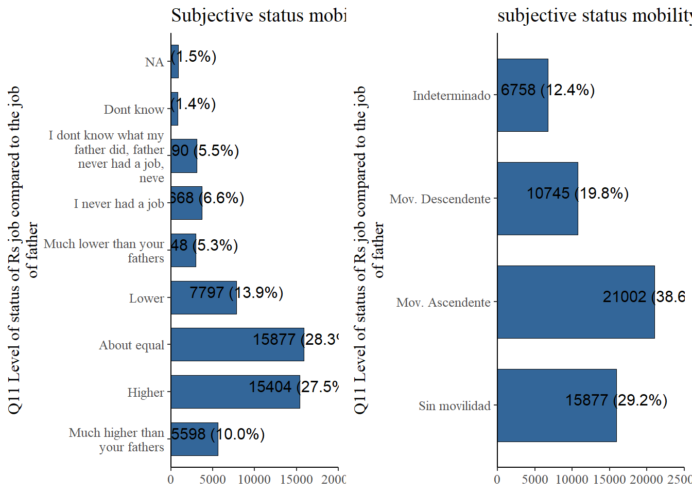
#Codigos por incorporar: se deben hacer ajustes de moneda y partidos por pais.
# Home value (ver Nota 3)
#summary(indepvar$v67)
# Party
#freq(issp2009$party_lr)
#prop.table(table(indepvar$v5,indepvar$party_lr),1)*100
# paises sin datos: CL, CN, CY, HU, IL, TW
#freq(indepvar$cl_prty) # estan
#freq(indepvar$cn_prty) # no
#freq(indepvar$cy_prty) # si
#freq(indepvar$hu_prty) # si
#freq(indepvar$il_prty) # si
#freq(indepvar$tw_prty) # si
# para usarlas habría que clasificar partidos de esos países#Eliminar income por paises.
indepvar=indepvar[-c(1:41)]
dim(indepvar)
View(indepvar)## [1] 56021 17#indepvar_graph<-as.data.frame(indepvar[,2:16])
print(dfSummary(indepvar[-c(8)], valid.col = FALSE, graph.magnif = 1),
max.tbl.height = 300, method = "render")Data Frame Summary
Dimensions: 56021 x 16Duplicates: 0
| No | Variable | Label | Stats / Values | Freqs (% of Valid) | Graph | Missing | ||||||||||||||||||||||||||||||||||||||||||||||||||||||||||||
|---|---|---|---|---|---|---|---|---|---|---|---|---|---|---|---|---|---|---|---|---|---|---|---|---|---|---|---|---|---|---|---|---|---|---|---|---|---|---|---|---|---|---|---|---|---|---|---|---|---|---|---|---|---|---|---|---|---|---|---|---|---|---|---|---|---|---|
| 1 | sex [numeric] | Min : 0 Mean : 0.6 Max : 1 |
|
 |
45 (0.08%) | |||||||||||||||||||||||||||||||||||||||||||||||||||||||||||||
| 2 | age [numeric] | R: Age | Mean (sd) : 46.5 (17) min < med < max: 15 < 46 < 85 IQR (CV) : 27 (0.4) | 71 distinct values |  |
461 (0.82%) | ||||||||||||||||||||||||||||||||||||||||||||||||||||||||||||
| 3 | degree [numeric] | R: Education II-highest education level | Mean (sd) : 2.8 (1.5) min < med < max: 0 < 3 < 5 IQR (CV) : 2 (0.5) |
|
 |
387 (0.69%) | ||||||||||||||||||||||||||||||||||||||||||||||||||||||||||||
| 4 | hompop [numeric] | How many persons in household | Mean (sd) : 3.1 (1.7) min < med < max: 0 < 3 < 44 IQR (CV) : 2 (0.6) | 25 distinct values |  |
450 (0.8%) | ||||||||||||||||||||||||||||||||||||||||||||||||||||||||||||
| 5 | v44 [numeric] | Q10a [TOPBOT] Groups tending towards top+bottom. Where would you put yourself on | Mean (sd) : 6.4 (11.8) min < med < max: 1 < 5 < 99 IQR (CV) : 2 (1.8) | 13 distinct values |  |
0 (0%) | ||||||||||||||||||||||||||||||||||||||||||||||||||||||||||||
| 6 | v45 [numeric] | Q10b Where did the family that you grew up in, fit in then? | Mean (sd) : 6.4 (12.3) min < med < max: 1 < 5 < 99 IQR (CV) : 3 (1.9) | 12 distinct values |  |
0 (0%) | ||||||||||||||||||||||||||||||||||||||||||||||||||||||||||||
| 7 | movstatus [numeric] | Q11 Level of status of Rs job compared to the job of father | Mean (sd) : 2.2 (1) min < med < max: 1 < 2 < 4 IQR (CV) : 2 (0.5) |
|
 |
1639 (2.93%) | ||||||||||||||||||||||||||||||||||||||||||||||||||||||||||||
| 8 | id [numeric] | Country (see V4 for codes for the sample) | Mean (sd) : 4328175.1 (2637921.7) min < med < max: 320001 < 3920423 < 8620969 IQR (CV) : 5090563 (0.6) | 56021 distinct values |  |
0 (0%) | ||||||||||||||||||||||||||||||||||||||||||||||||||||||||||||
| 9 | age_c [numeric] | R: Age | Mean (sd) : 3.6 (1.6) min < med < max: 1 < 4 < 6 IQR (CV) : 3 (0.5) |
|
 |
461 (0.82%) | ||||||||||||||||||||||||||||||||||||||||||||||||||||||||||||
| 10 | univ [numeric] | Min : 0 Mean : 0.2 Max : 1 |
|
 |
387 (0.69%) | |||||||||||||||||||||||||||||||||||||||||||||||||||||||||||||
| 11 | income [numeric] | Mean (sd) : 286132.7 (1041580.7) min < med < max: 0 < 7000 < 9500000 IQR (CV) : 58000 (3.6) | 1309 distinct values |  |
9843 (17.57%) | |||||||||||||||||||||||||||||||||||||||||||||||||||||||||||||
| 12 | hhincome [numeric] | How many persons in household | Mean (sd) : 102520.1 (385367.5) min < med < max: 0 < 2625 < 9500000 IQR (CV) : 19250 (3.8) | 2238 distinct values |  |
10373 (18.52%) | ||||||||||||||||||||||||||||||||||||||||||||||||||||||||||||
| 13 | quintile [integer] | Mean (sd) : 3 (1.4) min < med < max: 1 < 3 < 5 IQR (CV) : 2 (0.5) |
|
 |
10373 (18.52%) | |||||||||||||||||||||||||||||||||||||||||||||||||||||||||||||
| 14 | quintile_miss [numeric] | Mean (sd) : 3.6 (1.7) min < med < max: 1 < 4 < 6 IQR (CV) : 3 (0.5) |
|
 |
0 (0%) | |||||||||||||||||||||||||||||||||||||||||||||||||||||||||||||
| 15 | sstatus [numeric] | Q10a [TOPBOT] Groups tending towards top+bottom. Where would you put yourself on | Mean (sd) : 6.4 (11.8) min < med < max: 1 < 5 < 99 IQR (CV) : 2 (1.8) | 13 distinct values |  |
0 (0%) | ||||||||||||||||||||||||||||||||||||||||||||||||||||||||||||
| 16 | f_sstatus [numeric] | Q10b Where did the family that you grew up in, fit in then? | Mean (sd) : 4.8 (2) min < med < max: 1 < 5 < 10 IQR (CV) : 3 (0.4) |
|
 |
958 (1.71%) |
Generated by summarytools 0.9.6 (R version 4.0.0)
2020-08-21
1.4 Measurement Merit & Getting ahead
| Code | New Code | Variable |
|---|---|---|
| v6 | wealthy | wealthy family |
| v7 | pareduc | educated parents |
| v9 | ambition | ambition |
| v10 | hwork | hard work |
| v11 | people | right people |
| v12 | polcone | political connections |
| v14 | race | race |
| v16 | gender | gender |
| v5 | - | Country |
| id | - | inividual id |
# Rename
getahead = issp2009[, c("v6", "v7", "v9", "v10", "v11", "v12",
"v14", "v16", # get ahead
"v5", "id")]
getahead$wealthy = getahead$v6
getahead$pareduc = getahead$v7
getahead$ambition = getahead$v9
getahead$hwork = getahead$v10
getahead$people = getahead$v11
getahead$polcone = getahead$v12
getahead$race = getahead$v14
getahead$gender = getahead$v16
getahead = getahead[-c(1:8)]
# recode values 8 9 to NA
#freq(getahead$wealthy)
getahead[3:10][getahead[3:10] > 5] <- NA
#freq(getahead$gender) # check ok
stargazer(getahead, type = "html")
# adjust labels
get_labels(getahead$wealthy)
getahead[, 3:10][getahead[, 3:10] >= 8] <- NA
get_labels(getahead[3:10]) # check
# Reverse code for SEM models
getahead[3:10] = 6 - getahead[3:10]
# Generate variables with 3 values for getahead mess model categoric
#names(getahead)
getahead_temp = subset(getahead[c(2, 3:10)])
#names(getahead_temp)
getahead_temp[2:9][getahead_temp[2:9] < 4] <- 3
# freq(getahead_temp$hwork)
#freq(getahead$hwork)
colnames(getahead_temp) = paste("c3", colnames(getahead_temp),
sep = "")
names(getahead_temp)[names(getahead_temp) == "c3id"] <- "id"
getahead_temp2 = merge(getahead, getahead_temp, by = c("id"))
names(getahead_temp2) # ok
getahead = getahead_temp2plot_likert((getahead[,3:8]),
geom.colors = c("#9ecae1", "#6baed6","#4292c6",
"#2171b5"), # colorbrewer2.org
sort.frq = "neg.asc", # sort descending)
title = "getahead",
intercept.line.color = "white", # vertical middle
expand.grid = F, # no inner margins in plot
show.n = FALSE, # hide N's in axis labels
grid.range = 1.8,
geom.size = 0.6) # expand axis 130% )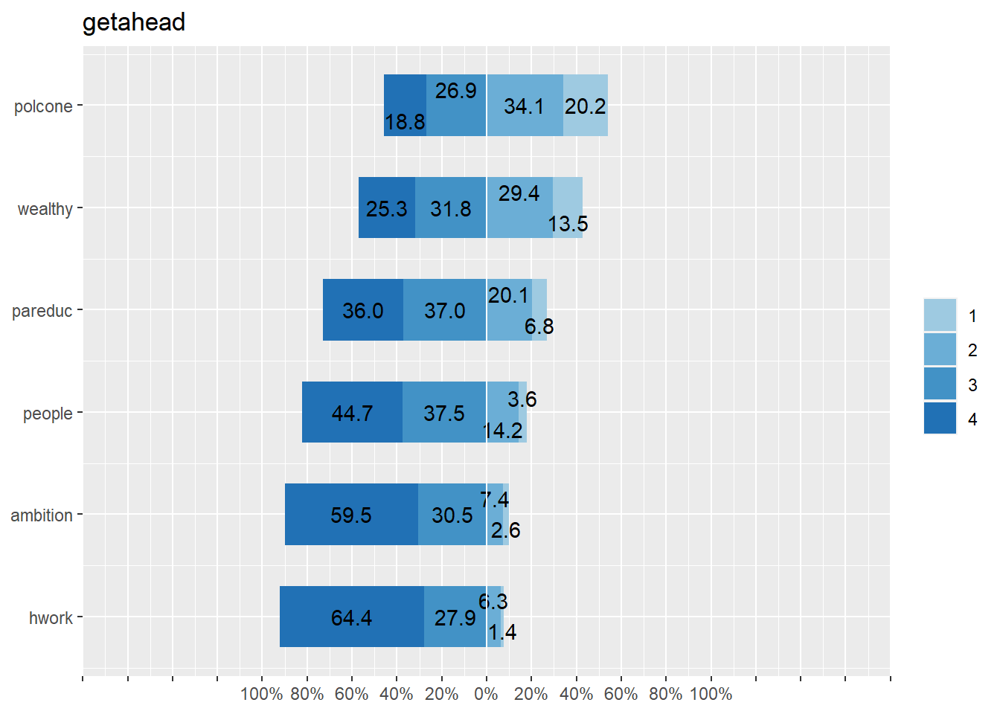
# Save object
# save(getahead, file="../objects/getahead.rda")Detearn
#names(issp2009)
detearn = issp2009[, c("v47", "v48", "v49", "v50", "v51",
"v52", "v5", "id")]
#names(detearn)
detearn$respons = detearn$v47
detearn$yeduc = detearn$v48
detearn$family = detearn$v49
detearn$child = detearn$v50
detearn$welljob = detearn$v51
detearn$hardjob = detearn$v52
#names(detearn)
detearn = detearn[-c(1:6)]
#names(detearn)
# recode values 8 9 to NA
#summary(detearn)
# freq(detearn$respons)
detearn[3:8][detearn[3:8] > 5] <- NA
# freq(detearn$respons) # check ok
#knitr::kable(summary(detearn), "html")
# Out Portugal (no answer in well job item)
detearn[which(detearn$v5 == 620), ] = NA
# adjust labels ###PROB PORTUCAL!!!
#get_labels(detearn)
detearn[, 3:8][detearn[, 3:8] >= 8] <- NA
detearn$welljob <- sjlabelled::set_na(detearn$welljob, na = c(0))
#knitr::kable(summary(detearn), "html")
# freq(detearn$welljob) ## prob portugal
detearn$welljob[detearn$welljob == 0] = NA
#get_labels(detearn$welljob)
labels(detearn$welljob) = labels(detearn$respons)### PROB NOT SOLVED
# Reverse code for SEM models
detearn$respons <- as.numeric(detearn$respons)
detearn$yeduc <- as.numeric(detearn$yeduc)
detearn$family <- as.numeric(detearn$family)
detearn$child <- as.numeric(detearn$child)
detearn$welljob <- as.numeric(detearn$welljob)
detearn$hardjob <- as.numeric(detearn$hardjob)sjPlot::plot_likert(detearn[, 3:8],
geom.colors = c("#9ecae1", "#6baed6", "#4292c6", "#2171b5"), # colorbrewer2.org
cat.neutral = 3,
sort.frq = "neg.asc", # sort descending)
title = "Before detearn",
intercept.line.color = "white", # vertical middle
expand.grid = F, # no inner margins in plot
show.n = FALSE, # hide N's in axis labels
grid.range = 1.8,
geom.size = 0.6) # expand axis 130% ))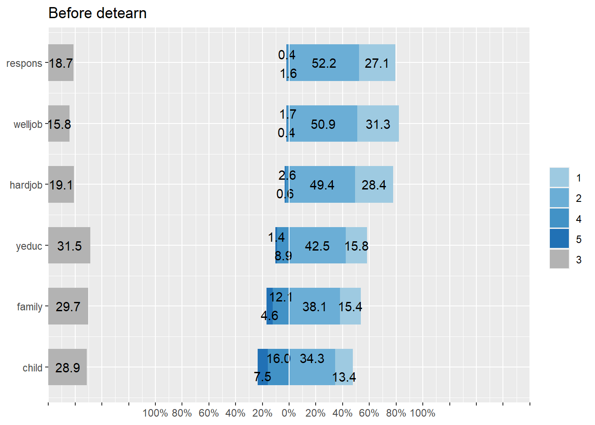
detearn$respons = as.numeric(6 - detearn$respons)
detearn$yeduc = as.numeric(6 - detearn$yeduc)
detearn$family = as.numeric(6 - detearn$family)
detearn$child = as.numeric(6 - detearn$child)
detearn$welljob = as.numeric(6 - detearn$welljob)
detearn$hardjob = as.numeric(6 - detearn$hardjob)
sjPlot::plot_likert(detearn[,3:8],
geom.colors = c("#9ecae1", "#6baed6", "#4292c6", "#2171b5"), # colorbrewer2.org
cat.neutral = 3,
sort.frq = "neg.asc", # sort descending)
title = "After detearn",
intercept.line.color = "white", # vertical middle
expand.grid = F, # no inner margins in plot
show.n = FALSE, # hide N's in axis labels
grid.range = 1.8,
geom.size = 0.6) # expand axis 130% ))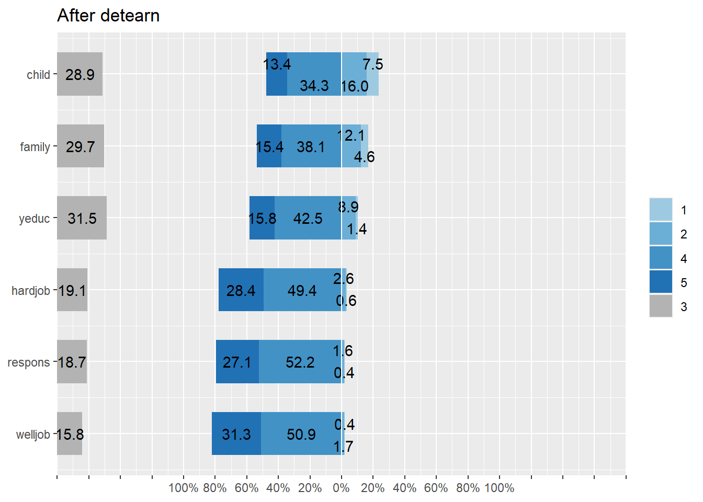
freq(detearn$respons)## Frequencies
##
## Freq % Valid % Valid Cum. % Total % Total Cum.
## ----------- ------- --------- -------------- --------- --------------
## 1 192 0.36 0.36 0.34 0.34
## 2 866 1.61 1.96 1.55 1.89
## 3 10068 18.68 20.64 17.97 19.86
## 4 28156 52.23 72.87 50.26 70.12
## 5 14623 27.13 100.00 26.10 96.22
## <NA> 2116 3.78 100.00
## Total 56021 100.00 100.00 100.00 100.001.5 Measuring Beliefs & Perceptions: merit_pref_perc
# 3. MEASURING BELIEFS & PERCEPTIONS ------ -
# 3.1 Define object --------------------- -------------------------------
# load("./objects/getahead.rda")
# load("./objects/detearn.rda")
# names(getahead)
# names(detearn)
merit_per_pref=merge(getahead,detearn, by=c("id","v5"))
# names(merit_per_pref)
# Estimación del modelo c/ unmerit 2do orden
cfa_perpref2 <- '
# latent variables
merit =~ hwork + ambition
parent=~ wealthy + pareduc
backg=~ race + gender
network=~ people + polcone
unmerit=~ parent + backg + network # 2nd order
bmerit =~ welljob + hardjob
need=~ family + child
'
fit_perpref2 <- cfa(cfa_perpref2, data = merit_per_pref,missing = "ML")
# summary(fit_perpref2, fit.measures=TRUE,standardized=TRUE)
# Path model
semPaths(fit_perpref2,layout = "tree", rotation = 2,
intercepts = FALSE, style = "lisrel", curvePivot = TRUE,
sizeMan = 3.5, sizeLat = 6)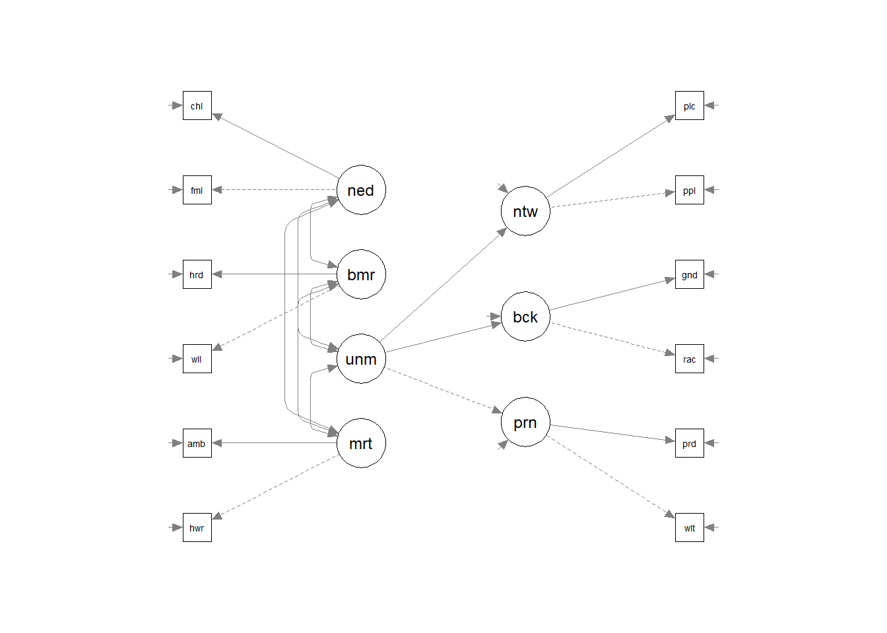
Factor scores fit_perpref2: merit_per_pref_sco
out <- mice(merit_per_pref[,c(3:10,19:24)], m=5)# Multiple imputation (para recuperar missings en scores) - REVIEW THIS, command lavPredict from 2017 should predict with missing values therefore saving from multiple imputation
# generate 5 multiple complete datasets
D1 <- complete(out, 1)
D2 <- complete(out, 2)
D3 <- complete(out, 3)
D4 <- complete(out, 4)
D5 <- complete(out, 5)
# fit model for each complete dataset
fit1 <- cfa(cfa_perpref2, data = D1)
fit2 <- cfa(cfa_perpref2, data = D2)
fit3 <- cfa(cfa_perpref2, data = D3)
fit4 <- cfa(cfa_perpref2, data = D4)
fit5 <- cfa(cfa_perpref2, data = D5)
# predict scores for all models
p1 <- predict(fit1)
p2 <- predict(fit2)
p3 <- predict(fit3)
p4 <- predict(fit4)
p5 <- predict(fit5)
# compute 'average' across 5 sets of scores:
scores <- (p1 + p2 + p3 + p4 + p5) / 5
# Generate factor scores
scores_dat = as.data.frame(scores)
dim(scores_dat)
str(scores_dat)
summary(scores)
# Generate object with factor scores
dim(merit_per_pref)
dim(scores_dat)
merit_per_pref_sco = cbind(merit_per_pref, scores)
# Save object with factor scores
# names(merit_per_pref_sco)
merit_per_pref_sco = merit_per_pref_sco[, c(1:2, 25:31)]
# save(merit_per_pref_sco,
# file="./objects/merit_per_pref_sco.rda")Bases de datos creadas.
[Explicar mejor]
Indepvar.rda: variables sociodemograficas redistrib_sco: variables latentes de preferencias redistributivas. merit_perc_pref_sco: variables latentes de creencias meritocraticas.
Merge varaibles indivuales.
indiv<- merge (indepvar, redistrib_sco, by = c("id"))
indiv <- merge (indiv, merit_per_pref_sco, by = c("id"))print(dfSummary(indiv, valid.col = FALSE, graph.magnif = 1),
max.tbl.height = 300, method = "render")Data Frame Summary
Dimensions: 55021 x 33Duplicates: 0
| No | Variable | Stats / Values | Freqs (% of Valid) | Graph | Missing | ||||||||||||||||||||||||||||||||||||||||||||||||||||||||||||
|---|---|---|---|---|---|---|---|---|---|---|---|---|---|---|---|---|---|---|---|---|---|---|---|---|---|---|---|---|---|---|---|---|---|---|---|---|---|---|---|---|---|---|---|---|---|---|---|---|---|---|---|---|---|---|---|---|---|---|---|---|---|---|---|---|---|
| 1 | id [numeric] | Mean (sd) : 4294145.9 (2649572.1) min < med < max: 320001 < 3801007 < 8620969 IQR (CV) : 5139998 (0.6) | 55021 distinct values |  |
0 (0%) | ||||||||||||||||||||||||||||||||||||||||||||||||||||||||||||
| 2 | sex [numeric] | Min : 0 Mean : 0.5 Max : 1 |
|
 |
45 (0.08%) | ||||||||||||||||||||||||||||||||||||||||||||||||||||||||||||
| 3 | age [numeric] | Mean (sd) : 46.5 (16.9) min < med < max: 15 < 46 < 85 IQR (CV) : 28 (0.4) | 71 distinct values |  |
449 (0.82%) | ||||||||||||||||||||||||||||||||||||||||||||||||||||||||||||
| 4 | degree [numeric] | Mean (sd) : 2.8 (1.4) min < med < max: 0 < 3 < 5 IQR (CV) : 2 (0.5) |
|
 |
387 (0.7%) | ||||||||||||||||||||||||||||||||||||||||||||||||||||||||||||
| 5 | hompop [numeric] | Mean (sd) : 3.1 (1.7) min < med < max: 0 < 3 < 44 IQR (CV) : 2 (0.6) | 25 distinct values |  |
450 (0.82%) | ||||||||||||||||||||||||||||||||||||||||||||||||||||||||||||
| 6 | v44 [numeric] | Mean (sd) : 6.4 (11.6) min < med < max: 1 < 5 < 99 IQR (CV) : 2 (1.8) | 13 distinct values |  |
0 (0%) | ||||||||||||||||||||||||||||||||||||||||||||||||||||||||||||
| 7 | v45 [numeric] | Mean (sd) : 6.3 (12.1) min < med < max: 1 < 5 < 99 IQR (CV) : 3 (1.9) | 12 distinct values |  |
0 (0%) | ||||||||||||||||||||||||||||||||||||||||||||||||||||||||||||
| 8 | movstatus [numeric] | Mean (sd) : 2.2 (1) min < med < max: 1 < 2 < 4 IQR (CV) : 2 (0.5) |
|
 |
1627 (2.96%) | ||||||||||||||||||||||||||||||||||||||||||||||||||||||||||||
| 9 | v5.x [numeric] | Mean (sd) : 429.3 (265) min < med < max: 32 < 380 < 862 IQR (CV) : 514 (0.6) | 40 distinct values |  |
0 (0%) | ||||||||||||||||||||||||||||||||||||||||||||||||||||||||||||
| 10 | age_c [numeric] | Mean (sd) : 3.6 (1.6) min < med < max: 1 < 4 < 6 IQR (CV) : 3 (0.5) |
|
 |
449 (0.82%) | ||||||||||||||||||||||||||||||||||||||||||||||||||||||||||||
| 11 | univ [numeric] | Min : 0 Mean : 0.2 Max : 1 |
|
 |
387 (0.7%) | ||||||||||||||||||||||||||||||||||||||||||||||||||||||||||||
| 12 | income [numeric] | Mean (sd) : 289700.8 (1047589.5) min < med < max: 0 < 7900 < 9500000 IQR (CV) : 62950 (3.6) | 1308 distinct values |  |
9414 (17.11%) | ||||||||||||||||||||||||||||||||||||||||||||||||||||||||||||
| 13 | hhincome [numeric] | Mean (sd) : 103812.5 (387628.4) min < med < max: 0 < 2750 < 9500000 IQR (CV) : 20250 (3.7) | 2234 distinct values |  |
9944 (18.07%) | ||||||||||||||||||||||||||||||||||||||||||||||||||||||||||||
| 14 | quintile [integer] | Mean (sd) : 3 (1.4) min < med < max: 1 < 3 < 5 IQR (CV) : 2 (0.5) |
|
 |
9944 (18.07%) | ||||||||||||||||||||||||||||||||||||||||||||||||||||||||||||
| 15 | quintile_miss [numeric] | Mean (sd) : 3.6 (1.7) min < med < max: 1 < 4 < 6 IQR (CV) : 3 (0.5) |
|
 |
0 (0%) | ||||||||||||||||||||||||||||||||||||||||||||||||||||||||||||
| 16 | sstatus [numeric] | Mean (sd) : 6.4 (11.6) min < med < max: 1 < 5 < 99 IQR (CV) : 2 (1.8) | 13 distinct values |  |
0 (0%) | ||||||||||||||||||||||||||||||||||||||||||||||||||||||||||||
| 17 | f_sstatus [numeric] | Mean (sd) : 4.8 (2) min < med < max: 1 < 5 < 10 IQR (CV) : 3 (0.4) |
|
 |
904 (1.64%) | ||||||||||||||||||||||||||||||||||||||||||||||||||||||||||||
| 18 | v5.y [numeric] | Mean (sd) : 429.3 (265) min < med < max: 32 < 380 < 862 IQR (CV) : 514 (0.6) | 40 distinct values |  |
0 (0%) | ||||||||||||||||||||||||||||||||||||||||||||||||||||||||||||
| 19 | income_dif [numeric] | Mean (sd) : 3.9 (1.1) min < med < max: 1 < 4 < 5 IQR (CV) : 2 (0.3) |
|
 |
1614 (2.93%) | ||||||||||||||||||||||||||||||||||||||||||||||||||||||||||||
| 20 | unemployed [numeric] | Mean (sd) : 3.9 (1) min < med < max: 1 < 4 < 5 IQR (CV) : 2 (0.3) |
|
 |
1315 (2.39%) | ||||||||||||||||||||||||||||||||||||||||||||||||||||||||||||
| 21 | taxes [numeric] | Mean (sd) : 4 (0.8) min < med < max: 1 < 4 < 5 IQR (CV) : 1 (0.2) |
|
 |
2715 (4.93%) | ||||||||||||||||||||||||||||||||||||||||||||||||||||||||||||
| 22 | health [numeric] | Mean (sd) : 2.5 (1.3) min < med < max: 1 < 2 < 5 IQR (CV) : 3 (0.5) |
|
 |
1768 (3.21%) | ||||||||||||||||||||||||||||||||||||||||||||||||||||||||||||
| 23 | educ [numeric] | Mean (sd) : 2.5 (1.3) min < med < max: 1 < 2 < 5 IQR (CV) : 3 (0.5) |
|
 |
1781 (3.24%) | ||||||||||||||||||||||||||||||||||||||||||||||||||||||||||||
| 24 | redist [numeric] | Mean (sd) : 0 (0.6) min < med < max: -2.5 < 0.1 < 1 IQR (CV) : 0.9 (-117.3) | 7214 distinct values |  |
0 (0%) | ||||||||||||||||||||||||||||||||||||||||||||||||||||||||||||
| 25 | accum [numeric] | Mean (sd) : 0 (1.1) min < med < max: -1.4 < -0.3 < 2.4 IQR (CV) : 1.8 (260.7) | 7214 distinct values |  |
0 (0%) | ||||||||||||||||||||||||||||||||||||||||||||||||||||||||||||
| 26 | v5 [numeric] | Mean (sd) : 429.3 (265) min < med < max: 32 < 380 < 862 IQR (CV) : 514 (0.6) | 40 distinct values |  |
0 (0%) | ||||||||||||||||||||||||||||||||||||||||||||||||||||||||||||
| 27 | merit [numeric] | Mean (sd) : 0 (0.5) min < med < max: -2.1 < 0 < 0.9 IQR (CV) : 0.6 (4645081780972329) | 49193 distinct values |  |
0 (0%) | ||||||||||||||||||||||||||||||||||||||||||||||||||||||||||||
| 28 | parent [numeric] | Mean (sd) : 0 (0.8) min < med < max: -2 < 0 < 2 IQR (CV) : 1.2 (-260951189271852416) | 49193 distinct values |  |
0 (0%) | ||||||||||||||||||||||||||||||||||||||||||||||||||||||||||||
| 29 | backg [numeric] | Mean (sd) : 0 (0.7) min < med < max: -1.2 < -0.1 < 2.2 IQR (CV) : 1.1 (-79017958948987136) | 49193 distinct values |  |
0 (0%) | ||||||||||||||||||||||||||||||||||||||||||||||||||||||||||||
| 30 | network [numeric] | Mean (sd) : 0 (0.6) min < med < max: -1.5 < 0 < 1.5 IQR (CV) : 0.8 (59815466824270648) | 49193 distinct values |  |
0 (0%) | ||||||||||||||||||||||||||||||||||||||||||||||||||||||||||||
| 31 | unmerit [numeric] | Mean (sd) : 0 (0.6) min < med < max: -1.7 < 0 < 1.8 IQR (CV) : 0.8 (39754402862794752) | 49193 distinct values |  |
0 (0%) | ||||||||||||||||||||||||||||||||||||||||||||||||||||||||||||
| 32 | bmerit [numeric] | Mean (sd) : 0 (0.5) min < med < max: -2.2 < 0 < 0.7 IQR (CV) : 0.6 (6192007115850699) | 49193 distinct values |  |
0 (0%) | ||||||||||||||||||||||||||||||||||||||||||||||||||||||||||||
| 33 | need [numeric] | Mean (sd) : 0 (0.8) min < med < max: -1.9 < 0 < 1.3 IQR (CV) : 0.8 (-23935762004133196) | 49193 distinct values |  |
0 (0%) |
Generated by summarytools 0.9.6 (R version 4.0.0)
2020-08-21
save(indiv, file="input/data/proc/indiv.rda")Section 2: Multilevel preparation data.
agg_lm=aggregate(indiv, by=list(indiv$v5),FUN=mean, na.rm=TRUE)
colnames(agg_lm) <- paste("j", colnames(agg_lm), sep = "_")
table(agg_lm$j_v5)
agg_lm$v5=agg_lm$j_v5
mer_pref=merge(indiv,agg_lm, by="v5")
dim(mer_pref)##
## 32 36 40 56 100 152 156 158 191 196 203 208 233 246 250 276
## 1 1 1 1 1 1 1 1 1 1 1 1 1 1 1 1
## 348 352 376 380 392 410 428 440 554 578 608 616 643 703 705 710
## 1 1 1 1 1 1 1 1 1 1 1 1 1 1 1 1
## 724 752 756 792 804 826 840 862
## 1 1 1 1 1 1 1 1
## [1] 55021 67mer_pref$age_g = mer_pref$age - mer_pref$j_age
mer_pref$sex_g = mer_pref$sex - mer_pref$j_sex
mer_pref$univ_g = mer_pref$univ - mer_pref$j_univ
mer_pref$sstatus_g = mer_pref$sstatus - mer_pref$j_sstatus
summary(mer_pref$univ_g)## Min. 1st Qu. Median Mean 3rd Qu. Max. NA's
## -0.3608 -0.2205 -0.1350 0.0000 -0.0759 0.9525 3872.1: SWIID
# Inequality swiid (4)
#load(url("https://raw.githubusercontent.com/franciscomeneses/bases/master/swiid8_3.rda"))
load("input/data/original/swiid8_3.rda")
# convertir desde formato original list a dataframe
swiid_summary <- swiid %>% bind_rows() %>%
group_by(country, year) %>%
summarize_all(funs(mean, sd)) %>%
ungroup() %>% dplyr::rename(.dots=setNames(names(.),
str_replace(names(.), "_mean", ""))) %>%
dplyr::rename_(.dots=setNames(names(.),str_replace(names(.), "_sd", "_se")))
save(swiid_summary, file = "input/data/proc/swiid_summary.rda")Filter only 2009
summary(swiid_summary$.dots...year)
swiid_summary09=subset(swiid_summary, .dots...year==2009)## Min. 1st Qu. Median Mean 3rd Qu. Max.
## 1960 1989 2000 1997 2008 2019Merge with indepvar object
# Generate equivalente country code
head(swiid_summary09$.dots...country)
as.numeric(swiid_summary09$country)
# Continuo
swiid_summary09$v5=countrycode(swiid_summary09$.dots...country,'country.name','iso3n')
str(swiid_summary09$v5)
# Categórico
swiid_summary09$v5c=countrycode(swiid_summary09$.dots...country,'country.name','iso3c')
str(swiid_summary09$v5c)
# Merge
#indepvar <- merge(swiid_summary09,indepvar,by=c("v5"))
#summary(indepvar$.dots..._1_gini_disp)## [1] "Afghanistan" "Albania" "Algeria" "Andorra"
## [5] "Angola" "Anguilla"
## numeric(0)
## num [1:173] 4 8 12 20 24 660 32 51 36 40 ...
## chr [1:173] "AFG" "ALB" "DZA" "AND" "AGO" "AIA" "ARG" ...mer_pref<- merge(swiid_summary09,mer_pref, by=c("v5"))mer_pref$gini_neto<- mer_pref$.dots...gini_disp
mer_pref$gini_mkt <- mer_pref$.dots...gini_mktmer_pref$redis_neto= as.numeric(mer_pref$gini_mkt - mer_pref$gini_neto)
mer_pref$redis_relativo = as.numeric(mer_pref$redis_neto / mer_pref$gini_mkt)
#hist(mer_pref$redis_relativo)mer_pref$redis_bradley <- as.numeric((1- mer_pref$gini_neto / mer_pref$gini_mkt) *100)
#hist(mer_pref$redis_bradley)### Recode Age
# Age
redistributionswiid <-sjPlot::plot_frq(mer_pref$redis_relativo, title = "Redistribution SWIID",show.mean = T , show.values = F,show.n = F, axis.labels = NULL, type = c("histogram"))
redistribbradley <- sjPlot::plot_frq(mer_pref$redis_bradley, title = "Redistribution Bradley", show.na = T, axis.labels = NULL, type = c("histogram"))
cowplot::plot_grid(redistributionswiid, redistribbradley, ncol=1)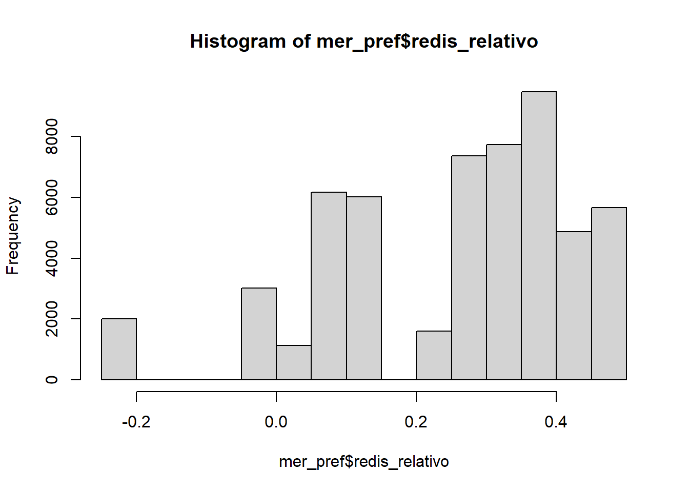
2.2: Qog
load( file = "input/data/original/qog.rda")
#load(url('https://raw.githubusercontent.com/franciscomeneses/bases/master/qog.rda'))
# Extract 2009 data
qog2009 = subset(qog, year == 2009)
# hist(qog$sgi_ectx) # Desempeño de las políticas: políticas económicas - impuestos
# hist(qog$sgi_sogi) # Desempeño de las políticas: Políticas sociales - Desigualdades sociales globales
# Merge with ISSP countries for cleaning
load("input/data/proc/indepvar_contries.rda")
issp_countries = aggregate(indepvar_contries[c("v5")],
list(indepvar_contries$country, indepvar_contries$v5c),
mean)
qog2009[c("ccode", "cname")] # check ISO codes
names(qog2009)[names(qog2009) == 'ccode'] <- 'v5'
qog2009_c = merge(issp_countries, qog2009, by = c("v5"))
dim(qog2009_c)
colSums(is.na(qog2009_c))
# Eliminar columnas con máximo 5 NAs
qog2009_c_na = qog2009_c[, colSums(is.na(qog2009_c)) < 6]
qog2009_c_na = qog2009_c %>% dplyr::select("v5", "fi_index") %>% as.data.frame()
# "sgi_ectx", "sgi_sogi" # Hasta ahora no hay valores, parece no haber para el 2009- Merge
mer_pref <- merge(mer_pref, qog2009_c_na, by=c("v5"))Pib per capita
library(readxl)
pibpc <- read_excel("input/data/original/pibpc.xls", sheet = "Data")
View(pibpc)
pibpc$v5c<-pibpc$CountryCode
pibpc$pibpc <- pibpc$`PIB per cápita (US$ a precios actuales)`
mer_pref <- merge(mer_pref, pibpc, by=c("v5c"))
sjPlot::plot_frq(mer_pref$pibpc, title = "Pib Per capita",show.mean = T , show.values = F,show.n = F, axis.labels = NULL, type = c("histogram"))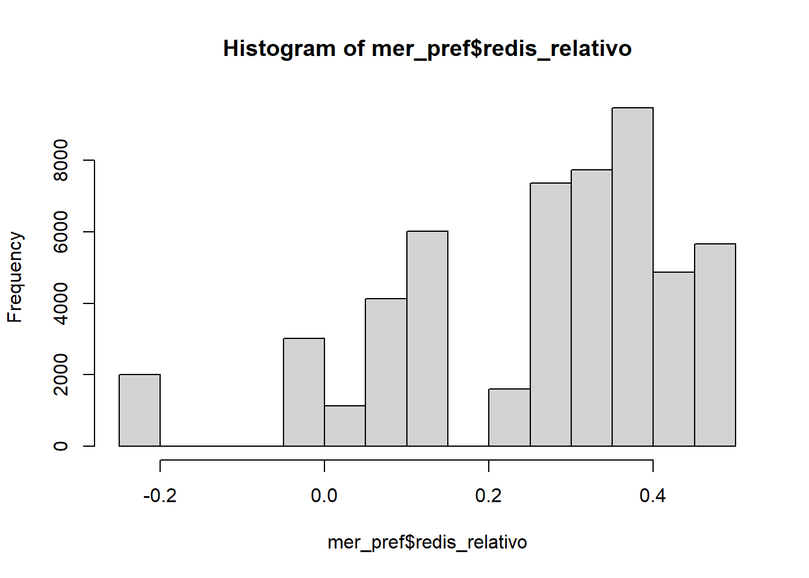
Taiwán no posee información sobre pibpc en el banco mundial, por ende el pib per capita para este pais se obtuvo de otra fuente: DatosMacro
save(mer_pref, file="input/data/proc/mer_pref.rda")#mer_pref_polycor <- mer_pref %>% dplyr::select(
#"j_redist", "j_accum" , #"j_merit","j_unmerit","j_bmerit","j_need",".dots...gini_disp",".dots...gini_mkt","fi_index", #"pibpc", "redis_relativo")
#save(mer_pref_polycor, file ="input/data/proc/mer_pref_polycor.rda")Government Effectivinnes
gov_effect <- read_excel("input/data/original/Data_Extract_From_Indicadores_mundiales_de_buen_gobierno.xlsx")
gov_effect$v5c<-gov_effect$`paiscode`
gov_effect$goveffect <- as.numeric(gov_effect$`2009 [YR2009]`)
mer_pref <- merge(mer_pref, gov_effect, by=c("v5c"))
sjPlot::plot_frq(mer_pref$goveffect, title = "Government Effectivinnes",show.mean = T , show.values = F,show.n = F, axis.labels = NULL, type = c("histogram"))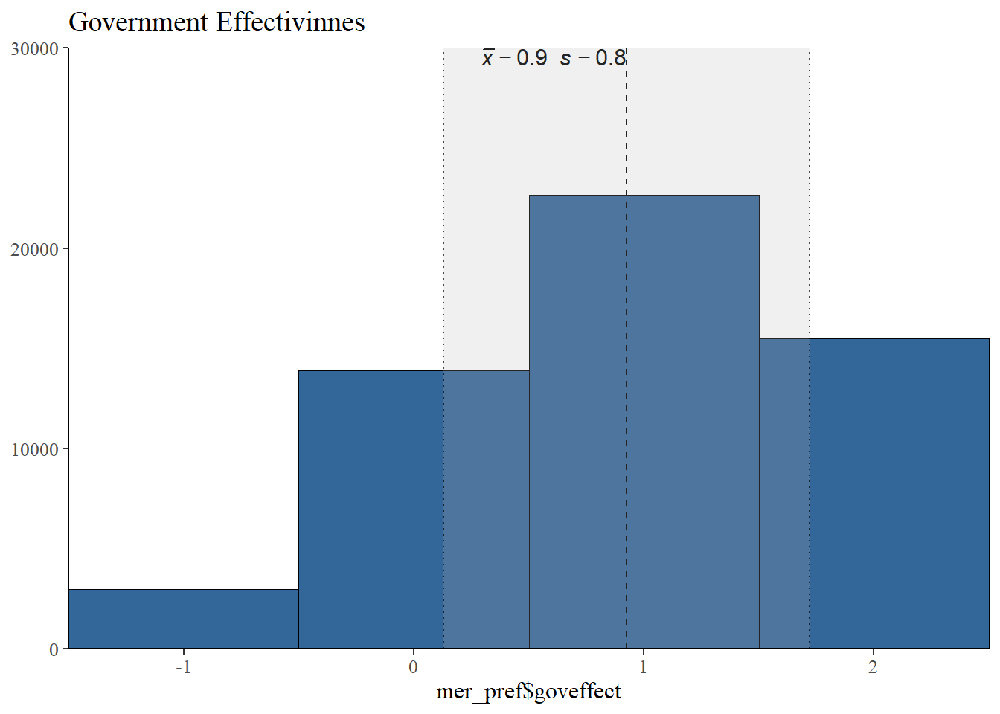
save(mer_pref, file="input/data/proc/mer_pref.rda")